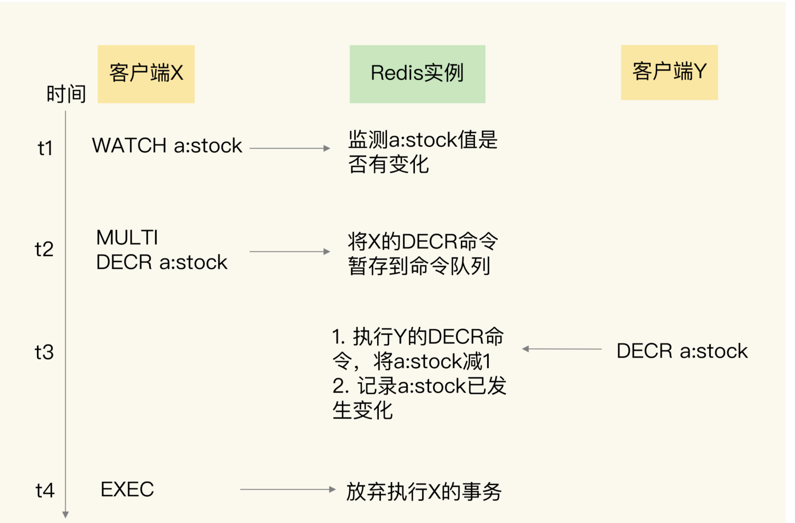
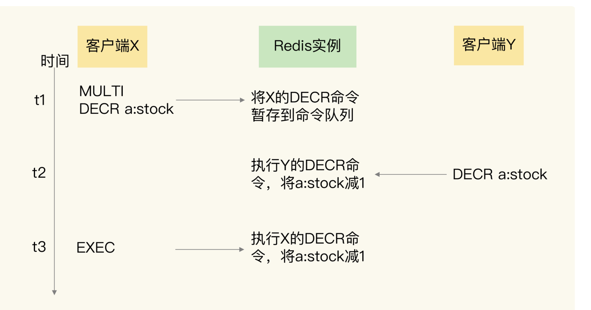
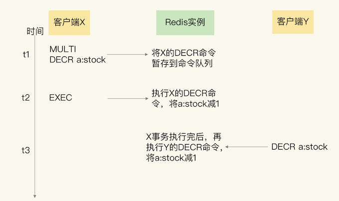
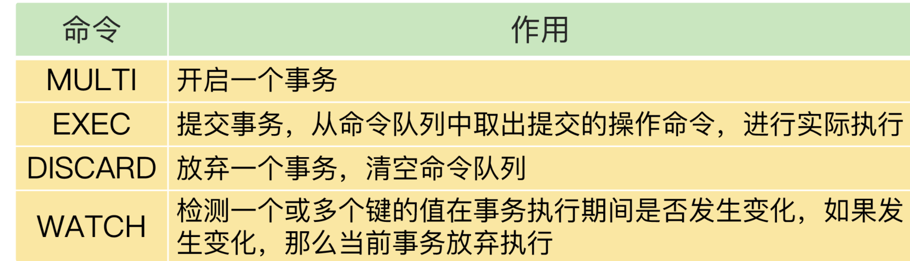

第四节 事务机制 Redis实现ACID属性
事务是数据库的一个重要功能。所谓的事务，就是指对数据进行读写的一系列操作。事务在执行时，会提供专门的属性保证，包括原子性（Atomicity）、一致性（Consistency）、隔离性（Isolation）和持久性（Durability），也就是 ACID 属性。
这些属性既包括了对事务执行结果的要求，也有对数据库在事务执行前后的数据状态变化的要求
1、事务 ACID 属性的要求
首先来看原子性。原子性的要求很明确，就是一个事务中的多个操作必须都完成，或者都不完成。业务应用使用事务时，原子性也是最被看重的一个属性。
我给你举个例子。假如用户在一个订单中购买了两个商品 A 和 B，那么，数据库就需要把这两个商品的库存都进行扣减。如果只扣减了一个商品的库存，那么，这个订单完成后，另一个商品的库存肯定就错了。
第二个属性是一致性。这个很容易理解，就是指数据库中的数据在事务执行前后是一致的。
第三个属性是隔离性。它要求数据库在执行一个事务时，其它操作无法存取到正在执行事务访问的数据。
借助用户下单的例子给你解释下。假设商品 A 和 B 的现有库存分别是 5 和 10，用户 X 对 A、B 下单的数量分别是 3、6。如果事务不具备隔离性，在用户 X 下单事务执行的过程中，用户 Y 一下子也购买了 5 件 B，这和 X 购买的 6 件 B 累加后，就超过 B 的总库存值了，这就不符合业务要求了。
最后一个属性是持久性。数据库执行事务后，数据的修改要被持久化保存下来。当数据库重启后，数据的值需要是被修改后的值。
2、Redis 如何实现事务？
事务的执行过程包含三个步骤，Redis 提供了 MULTI、EXEC 两个命令来完成这三个步骤。下面我们来分析下。
第一步，客户端要使用一个命令显式地表示一个事务的开启。在 Redis 中，这个命令就是 MULTI。
第二步，客户端把事务中本身要执行的具体操作（例如增删改数据）发送给服务器端。这些操作就是 Redis 本身提供的数据读写命令，例如 GET、SET 等。不过，这些命令虽然被客户端发送到了服务器端，但 Redis 实例只是把这些命令暂存到一个命令队列中，并不会立即执行。
第三步，客户端向服务器端发送提交事务的命令，让数据库实际执行第二步中发送的具体操作。Redis 提供的 EXEC 命令就是执行事务提交的。当服务器端收到 EXEC 命令后，才会实际执行命令队列中的所有命令。
下面的代码就显示了使用 MULTI 和 EXEC 执行一个事务的过程
#开启事务
127.0.0.1:6379> MULTI
OK
#将a:stock减1，
127.0.0.1:6379> DECR a:stock
QUEUED
#将b:stock减1
127.0.0.1:6379> DECR b:stock
QUEUED
#实际执行事务
127.0.0.1:6379> EXEC
1) (integer) 4
2) (integer) 9
- 假设
a:stock、b:stock两个键的初始值是 5 和 10。 - 在 MULTI 命令后执行的两个 DECR 命令，是把
a:stock、b:stock两个键的值分别减 1，它们执行后的返回结果都是QUEUED，这就表示，这些操作都被暂存到了命令队列，还没有实际执行。 - 等到执行了 EXEC 命令后，可以看到返回了 4、9，这就表明，两个 DECR 命令已经成功地执行了。
3、Redis 的事务机制能保证哪些属性？
3-1 原子性
如果事务正常执行，没有发生任何错误，那么，MULTI 和 EXEC 配合使用，就可以保证多个操作都完成。但是，如果事务执行发生错误了，原子性还能保证吗
第一种情况是，在执行 EXEC 命令前，客户端发送的操作命令本身就有错误（比如语法错误，使用了不存在的命令），在命令入队时就被 Redis 实例判断出来了。
对于这种情况，在命令入队时，Redis 就会报错并且记录下这个错误。
此时，还能继续提交命令操作。等到执行了 EXEC 命令之后，Redis 就会拒绝执行所有提交的命令操作，返回事务失败的结果。这样一来，事务中的所有命令都不会再被执行了，保证了原子性。
事务操作入队时发生错误，而导致事务失败的小例子。
#开启事务
127.0.0.1:6379> MULTI
OK
#发送事务中的第一个操作，但是Redis不支持该命令，返回报错信息
127.0.0.1:6379> PUT a:stock 5
(error) ERR unknown command `PUT`, with args beginning with: `a:stock`, `5`,
#发送事务中的第二个操作，这个操作是正确的命令，Redis把该命令入队
127.0.0.1:6379> DECR b:stock
QUEUED
#实际执行事务，但是之前命令有错误，所以Redis拒绝执行
127.0.0.1:6379> EXEC
(error) EXECABORT Transaction discarded because of previous errors.
在这个例子中，事务里包含了一个 Redis 本身就不支持的 PUT 命令，所以，在 PUT 命令入队时，Redis 就报错了。
虽然，事务里还有一个正确的 DECR 命令，但是，在最后执行 EXEC 命令后，整个事务被放弃执行了。
第二种情况。和第一种情况不同的是：事务操作入队时，命令和操作的数据类型不匹配，但 Redis 实例没有检查出错误。但是，在执行完 EXEC 命令以后，Redis 实际执行这些事务操作时，就会报错。不过，需要注意的是，虽然 Redis 会对错误命令报错，但还是会把正确的命令执行完。在这种情况下，事务的原子性就无法得到保证了。
举个小例子。事务中的 LPOP 命令对 String 类型数据进行操作，入队时没有报错，但是，在 EXEC 执行时报错了。LPOP 命令本身没有执行成功，但是事务中的 DECR 命令却成功执行了。
#开启事务
127.0.0.1:6379> MULTI
OK
#发送事务中的第一个操作，LPOP命令操作的数据类型不匹配，此时并不报错
127.0.0.1:6379> LPOP a:stock
QUEUED
#发送事务中的第二个操作
127.0.0.1:6379> DECR b:stock
QUEUED
#实际执行事务，事务第一个操作执行报错
127.0.0.1:6379> EXEC
1) (error) WRONGTYPE Operation against a key holding the wrong kind of value
2) (integer) 8
Redis 中并没有提供回滚机制。虽然 Redis 提供了 DISCARD 命令，但是，这个命令只能用来主动放弃事务执行，把暂存的命令队列清空，起不到回滚的效果。
#读取a:stock的值4
127.0.0.1:6379> GET a:stock
"4"
#开启事务
127.0.0.1:6379> MULTI
OK
#发送事务的第一个操作，对a:stock减1
127.0.0.1:6379> DECR a:stock
QUEUED
#执行DISCARD命令，主动放弃事务
127.0.0.1:6379> DISCARD
OK
#再次读取a:stock的值，值没有被修改
127.0.0.1:6379> GET a:stock
"4"
例子中，a:stock 键的值一开始为 4，然后，我们执行一个事务，想对 a:stock 的值减 1。但是，在事务的最后，我们执行的是 DISCARD 命令，所以事务就被放弃了。我们再次查看 a:stock 的值，会发现仍然为 4。
第三种情况：在执行事务的 EXEC 命令时，Redis 实例发生了故障，导致事务执行失败。
在这种情况下，如果 Redis 开启了 AOF 日志，那么，只会有部分的事务操作被记录到 AOF 日志中。
我们需要使用 redis-check-aof工具检查 AOF 日志文件，这个工具可以把未完成的事务操作从 AOF 文件中去除。这样一来，我们使用 AOF 恢复实例后，事务操作不会再被执行，从而保证了原子性。
如果 AOF 日志并没有开启，那么实例重启后，数据也都没法恢复了，此时，也就谈不上原子性了。
Redis 对事务原子性属性的保证情况
- 命令入队时就报错，会放弃事务执行，保证原子性；
- 命令入队时没报错，实际执行时报错，不保证原子性；
- EXEC 命令执行时实例故障，如果开启了 AOF 日志，可以保证原子性。
3-2 一致性
事务的一致性保证会受到错误命令、实例故障的影响。
情况一：命令入队时就报错
在这种情况下，事务本身就会被放弃执行，所以可以保证数据库的一致性。
情况二：命令入队时没报错，实际执行时报错
在这种情况下，有错误的命令不会被执行，正确的命令可以正常执行，也不会改变数据库的一致性。
情况三：EXEC 命令执行时实例发生故障
在这种情况下，实例故障后会进行重启，这就和数据恢复的方式有关了，我们要根据实例是否开启了 RDB 或 AOF 来分情况讨论下。
如果我们没有开启 RDB 或 AOF，那么，实例故障重启后，数据都没有了，数据库是一致的。
如果我们使用了 RDB 快照，因为 RDB 快照不会在事务执行时执行，所以，事务命令操作的结果不会被保存到 RDB 快照中，使用 RDB 快照进行恢复时，数据库里的数据也是一致的。
如果我们使用了 AOF 日志，而事务操作还没有被记录到 AOF 日志时，实例就发生了故障，那么，使用 AOF 日志恢复的数据库数据是一致的。如果只有部分操作被记录到了 AOF 日志，我们可以使用 redis-check-aof清除事务中已经完成的操作，数据库恢复后也是一致的。
3-3 隔离性
务的隔离性保证，会受到和事务一起执行的并发操作的影响。而事务执行又可以分成命令入队（EXEC 命令执行前）和命令实际执行（EXEC 命令执行后）两个阶段，所以，我们就针对这两个阶段，分成两种情况来分析：
- 并发操作在 EXEC 命令前执行，此时，隔离性的保证要使用 WATCH 机制来实现，否则隔离性无法保证；
- 并发操作在 EXEC 命令后执行，此时，隔离性可以保证。
第一种情况。一个事务的 EXEC 命令还没有执行时，事务的命令操作是暂存在命令队列中的。此时，如果有其它的并发操作，我们就需要看事务是否使用了 WATCH 机制。
WATCH 机制的作用是，在事务执行前，监控一个或多个键的值变化情况，当事务调用 EXEC 命令执行时，WATCH 机制会先检查监控的键是否被其它客户端修改了。如果修改了，就放弃事务执行，避免事务的隔离性被破坏。然后，客户端可以再次执行事务，此时，如果没有并发修改事务数据的操作了，事务就能正常执行，隔离性也得到了保证。
WATCH 机制的具体实现是由 WATCH 命令实现的

- 在 t1 时，客户端 X 向实例发送了 WATCH 命令。实例收到 WATCH 命令后，开始监测 a:stock 的值的变化情况。
- 紧接着，在 t2 时，客户端 X 把 MULTI 命令和 DECR 命令发送给实例，实例把 DECR 命令暂存入命令队列。
- 在 t3 时，客户端 Y 也给实例发送了一个 DECR 命令，要修改 a:stock 的值，实例收到命令后就直接执行了。
- 等到 t4 时，实例收到客户端 X 发送的 EXEC 命令，但是，实例的 WATCH 机制发现 a:stock 已经被修改了，就会放弃事务执行。这样一来，事务的隔离性就可以得到保证了。
当然，如果没有使用 WATCH 机制，在 EXEC 命令前执行的并发操作是会对数据进行读写的。而且，在执行 EXEC 命令的时候，事务要操作的数据已经改变了，在这种情况下，Redis 并没有做到让事务对其它操作隔离，隔离性也就没有得到保障。
下面这张图显示了没有 WATCH 机制时的情况

在 t2 时刻，客户端 X 发送的 EXEC 命令还没有执行，但是客户端 Y 的 DECR 命令就执行了，此时，a:stock 的值会被修改，这就无法保证 X 发起的事务的隔离性了。
并发操作在 EXEC 命令之后被服务器端接收并执行。
因为 Redis 是用单线程执行命令，而且，EXEC 命令执行后，Redis 会保证先把命令队列中的所有命令执行完。所以，在这种情况下，并发操作不会破坏事务的隔离性，如下图所示：

3-4 持久性
因为 Redis 是内存数据库，所以，数据是否持久化保存完全取决于 Redis 的持久化配置模式。
如果 Redis 没有使用 RDB 或 AOF，那么事务的持久化属性肯定得不到保证。如果 Redis 使用了 RDB 模式，那么，在一个事务执行后，而下一次的 RDB 快照还未执行前，如果发生了实例宕机，这种情况下，事务修改的数据也是不能保证持久化的。
如果 Redis 采用了 AOF 模式，因为 AOF 模式的三种配置选项 no、everysec 和 always 都会存在数据丢失的情况，所以，事务的持久性属性也还是得不到保证。
不管 Redis 采用什么持久化模式，事务的持久性属性是得不到保证的。
4、本节小结
Redis 通过 MULTI、EXEC、DISCARD 和 WATCH 四个命令来支持事务机制，这 4 个命令的作用，总结在下面的表中，你可以再看下。

Redis 的事务机制可以保证一致性和隔离性，但是无法保证持久性。不过，因为 Redis 本身是内存数据库，持久性并不是一个必须的属性，我们更加关注的还是原子性、一致性和隔离性这三个属性。
原子性的情况比较复杂，只有当事务中使用的命令语法有误时，原子性得不到保证，在其它情况下，事务都可以原子性执行。
小建议：严格按照 Redis 的命令规范进行程序开发，并且通过 code review 确保命令的正确性。这